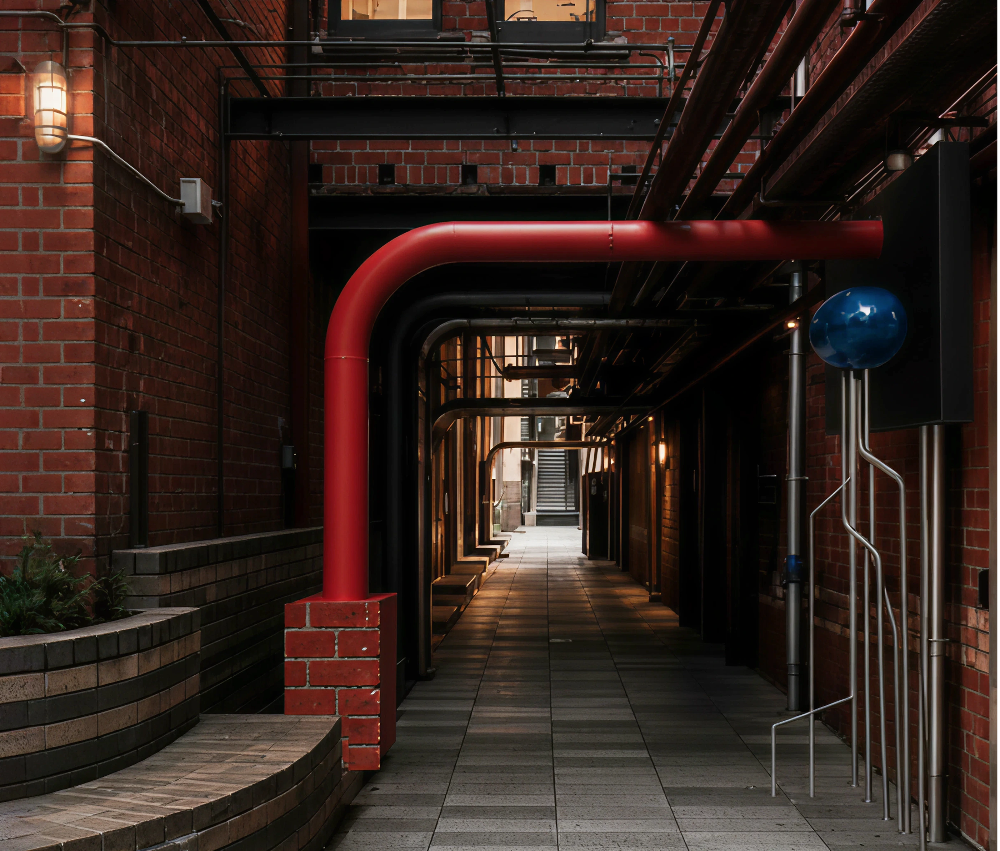
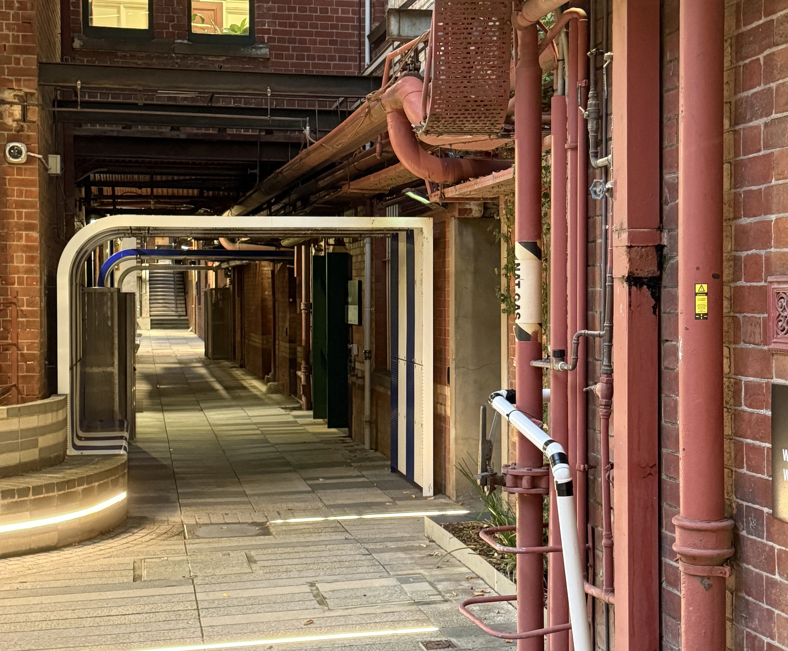
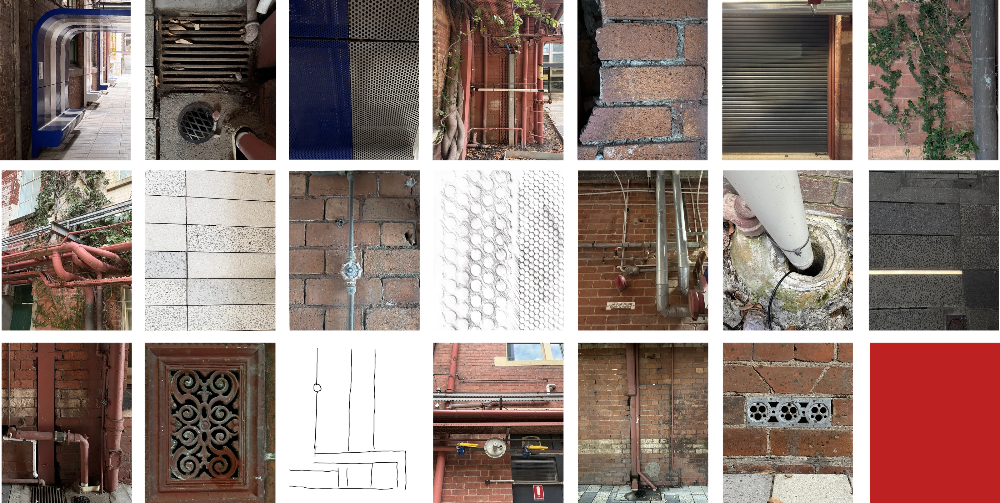
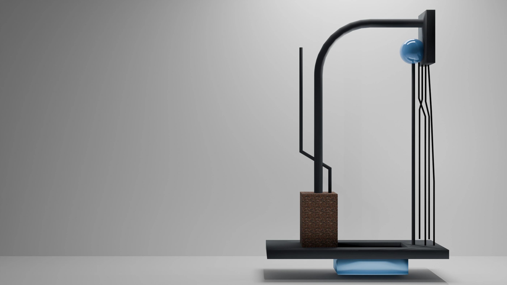
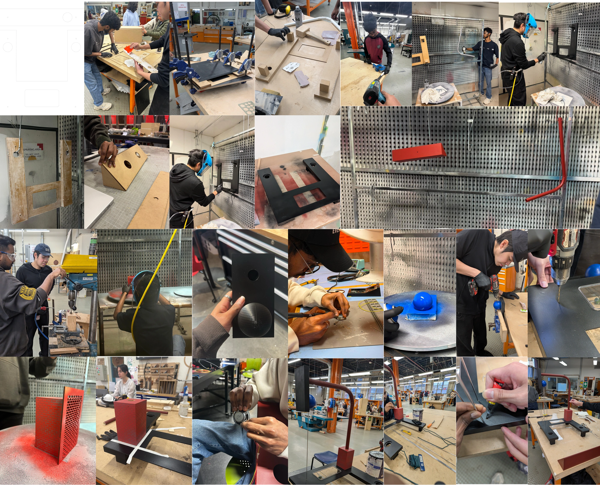
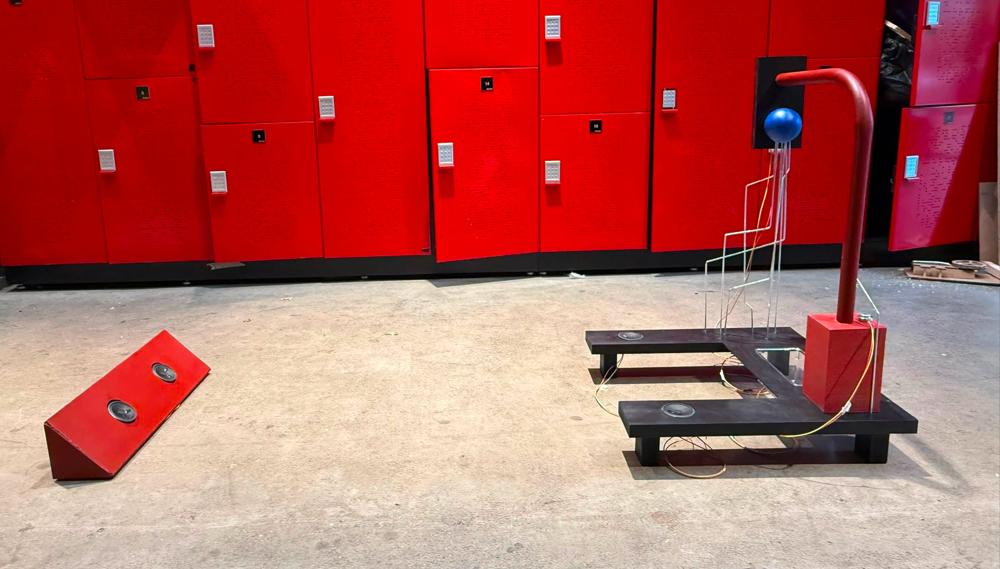

SEDIMENT
Sediment explores time, memory, and material change.

PROBLEM
Urban infrastructure is usually experienced as background, especially in transitional spaces like laneways where people move quickly from one destination to another. For the everyday passer-by, pipes, drainage, cables, water systems, mechanical noise, and electrical signals are visible or audible but rarely understood as part of the city's living structure. This creates a disconnect between the systems that sustain the built environment and the people who move through it, reducing architecture to surfaces while hiding the flows that make it function.

PROPOSED SOLUTION
Sediment proposes a fragmented sonic sculpture that transforms hidden laneway infrastructure into a visible, tactile, and audible experience. Instead of recreating the site literally, the installation abstracts its industrial language through bent PVC pipe, MDF foundations, timber, metal wires, water, transducers, speakers, and spatialised sound. By exposing and disrupting the logic of pipes, flow, and structure, the work invites the audience to slow down and experience the laneway as an unconscious city: a layered system of movement, vibration, sound, decay, and support.
PROCESS

We began by studying the laneway as an unconscious layer of the city, identifying pipes, drainage, cables, water flow, mechanical noise, and exposed services as hidden systems that quietly sustain the built environment.

We translated these site observations into a fragmented sculptural language, using the arched geometry of the laneway, pipe networks, subsurface flow, and Anarchitecture to disrupt the idea of architecture as fixed and complete.

We developed the final installation through material and sound testing, combining bent PVC, layered MDF, timber, water, wires, speakers, and transducers to make the hidden infrastructure visible, audible, and physical.
OUTCOME

IMPACT
Accomplished a stronger awareness of hidden urban infrastructure, as measured by the completed prototype's ability to combine visual exposure, spatial sound, vibration, water, and material references into one immersive installation, by translating the laneway's pipes, cables, drainage, mechanical processes, and structural fragments into a sensory experience.
MY CONTRIBUTION
Contributed to the conceptual framing of Sediment by connecting the unconscious city, Anarchitecture, and the laneway site into a clear design direction centred on hidden infrastructure, fragmentation, and spatial experience. Contributed to the visual and spatial development of the project by translating site observations into sketches, diagrams, and form studies that connected arched infrastructure, pipe networks, subsurface flow, and exposed building systems. Contributed to the fabrication process by supporting material decisions, assembly logic, and prototype development across MDF, PVC, timber, water, wire, speakers, and transducer components. Contributed to the final communication of the project by shaping the presentation narrative around the audience's experience, showing how a passer-by can move from ignoring background infrastructure to actively seeing, hearing, and feeling the systems that sustain the city.
TEAM
- Manu PadmaraagamDesign and Workshop Lead
- Tod KasiditDesign Lead
- Jeffrey Anthony CharlesWorkshop Lead